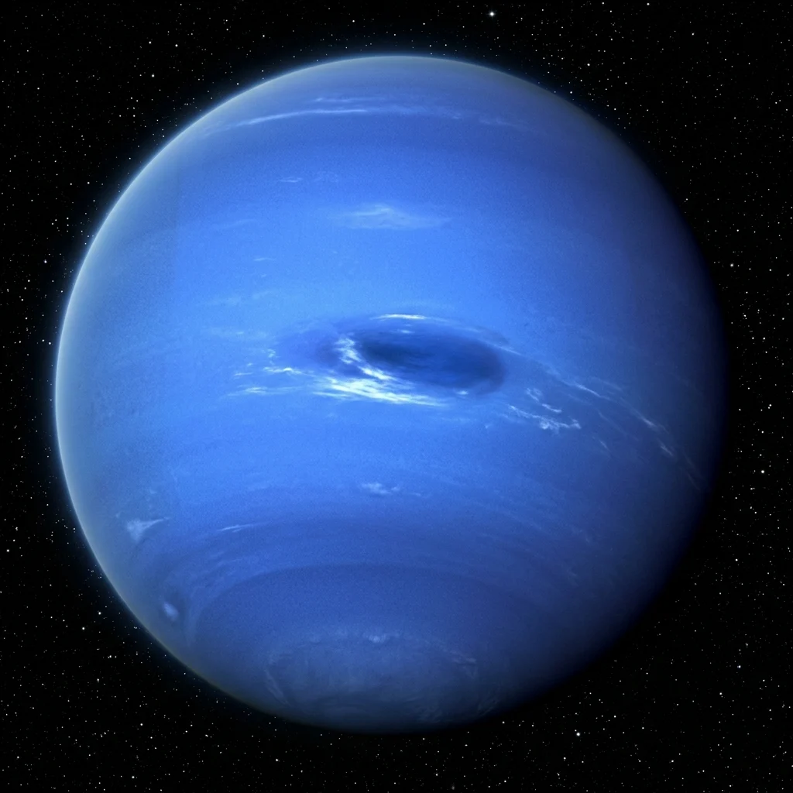

Solar system voyage · Stop 9 of 10
Sunlight is faint here, yet clouds still race across the atmosphere. Distance does not mean stillness.
30.1 AU from the Sun · mean distance, rounded
Investigate the sunlight
Spacecraft-inspired view. Images are not a live view; sizes and star positions are not to scale. Select an image to examine it with the class.
Predict first: move twice as far from the Sun. How much light reaches the same area?
distance from the Sun
sunlight per m², compared with Earth
one-way light travel from the Sun
1 AU ≈ 150 million km. Model: sunlight ∝ 1 / distance²; light takes about 8.32 minutes per AU. These are Sun-to-location values, not Earth-to-spacecraft communication times. Atmospheres, temperature, and orbital eccentricity are not modeled. NASA solar system reference · NASA planetary distance table.
Does faint sunlight mean an atmosphere must be motionless?
No. Neptune has vigorous winds despite weak sunlight. Internal heat and atmospheric dynamics also matter.
Explain your answer using one observation from the image or lesson and one measurement from the sunlight experiment.
Sunlight is faint here, yet clouds still race across the atmosphere. Distance does not mean stillness.
Neptune is the eighth and most distant major planet in our solar system, orbiting 30 times further from the Sun than Earth. Despite receiving very little solar heat, it hosts the fastest atmospheric winds in the solar system, clocking supersonic speeds up to 2,100 km/h (1,300 mph).